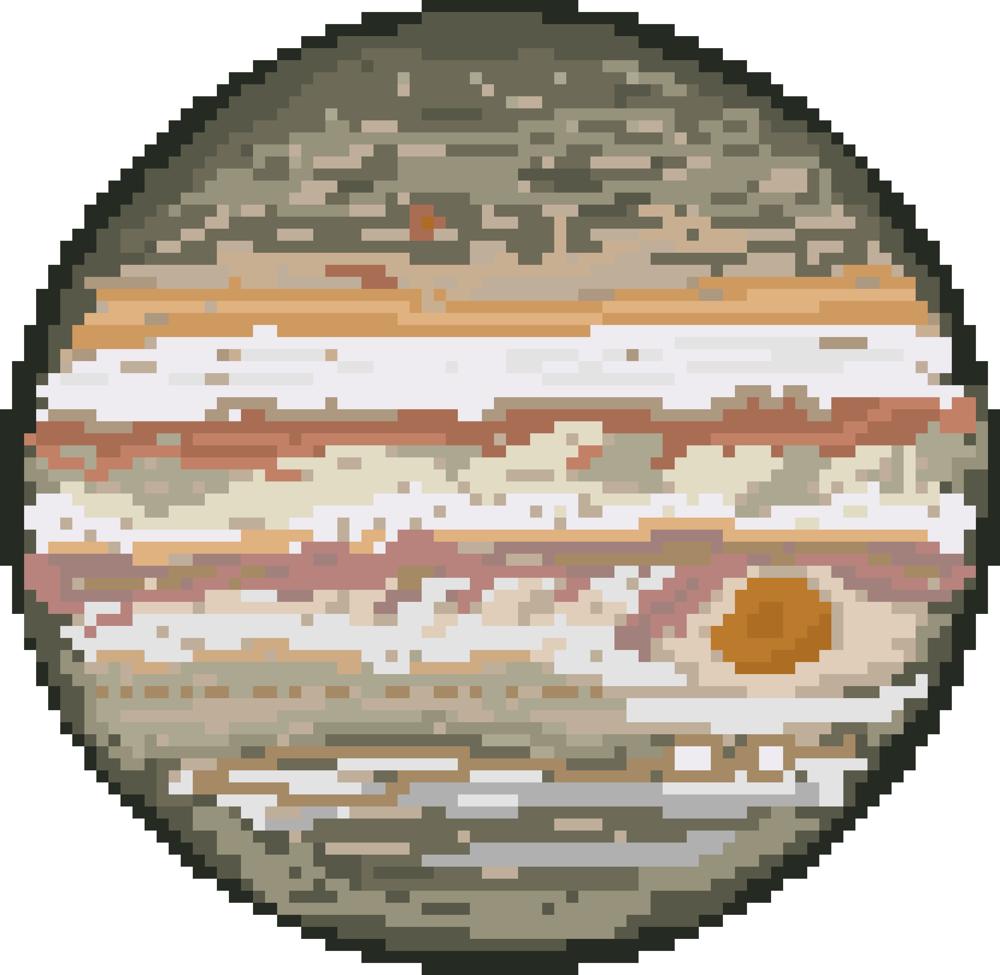

Júpiter: o rei dos planetas
Júpiter é o quinto planeta a partir do Sol e, de longe, o maior do Sistema Solar. Ele é tão grande que caberiam mais de 1.300 Terras dentro dele, e sua massa é mais que o dobro da de todos os outros planetas somados. Por isso recebeu o nome do rei dos deuses romanos. Da Terra, aparece a olho nu como um ponto brilhante e estável no céu noturno.
Um planeta sem chão
Júpiter é um gigante gasoso, formado principalmente por hidrogênio e hélio, os mesmos elementos que compõem o Sol. Ele não tem uma superfície firme: quanto mais fundo se desce, mais denso e quente o gás fica, até virar uma espécie de líquido. Uma nave que tentasse "pousar" seria esmagada antes de encontrar chão.
O dia mais curto do Sistema Solar
Apesar do tamanho, Júpiter é o planeta que gira mais rápido: um dia lá dura menos de 10 horas. Já o ano é longo, com quase 12 anos terrestres para dar uma volta no Sol. Essa rotação acelerada deixa o planeta achatado nos polos e mais largo no meio, como uma bola de massinha girando. Em 2026, dados da sonda Juno mostraram que Júpiter é um pouco menor e mais achatado do que se pensava.

Uma tempestade maior que a Terra
A Grande Mancha Vermelha é uma tempestade gigante, maior que a Terra inteira, com ventos que passam de 400 km/h. Ela é observada há quase 200 anos e continua girando, embora esteja encolhendo aos poucos. As listras coloridas do planeta também são faixas de nuvens e ventos que sopram em direções opostas.
Um mini sistema solar
Júpiter tem mais de 90 luas conhecidas. As quatro maiores foram descobertas por Galileu Galilei em 1610 e cada uma é um mundo à parte: Io é o lugar com mais vulcões ativos do Sistema Solar, Europa esconde um oceano de água salgada sob uma camada de gelo, Ganimedes é a maior lua de todas (maior até que Mercúrio) e Calisto é uma das superfícies mais cheias de crateras que conhecemos.
Um escudo magnético gigante
Júpiter tem o campo magnético mais forte entre os planetas, milhares de vezes mais intenso que o da Terra. Ele gera auroras enormes nos polos, mas também cinturões de radiação tão fortes que podem danificar os equipamentos das sondas que se aproximam.
O aspirador cósmico
Com sua gravidade enorme, Júpiter puxa e desvia muitos cometas e asteroides. Em 1994, o mundo viu ao vivo os pedaços do cometa Shoemaker-Levy 9 colidirem com o planeta, deixando marcas escuras maiores que a Terra. Por isso, alguns cientistas acreditam que ele ajuda a proteger os planetas internos, embora essa ideia ainda seja debatida.
Próximas visitas
Várias sondas já passaram por Júpiter, e a Juno o estuda desde 2016. Agora, duas novas missões estão a caminho, o JUICE, que vai explorar suas luas geladas, e a Europa Clipper, que vai examinar a lua com mais chances de abrigar vida, ambas com chegada prevista para o início da década de 2030.
Gigante, veloz e rodeado de luas fascinantes, Júpiter é quase um sistema solar em miniatura e um dos lugares onde a busca por vida fora da Terra pode dar seus próximos passos.